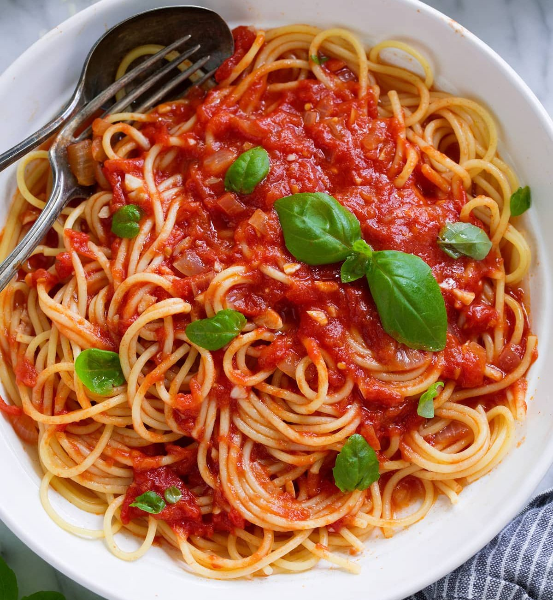

Spaghetti with marinara sauce

A mouth watering spaghetti with marinara sauce recipe, that will make you rethink your life
Do sometimes crave for a bite of some simple and quick dish, for which you don't wish to spend the next 21/2 weeks of your precious life to research and finally perfect on the fifth try? Do you sometimes just want to heat up some spaghetti and while delicious as they are, some sauce wouldn't hurt, but what a hassle... bah, let's just throw some ketchup on them, what's the diff? Well i think you know the answer to that question, but fret not, while true that it's a lot simpler to just drown them in ketchup, i'll show you that making a special sauce for them will not only forever change the flavor of this dish for you, but that it's quite simple and quick to do so. On your mark, get set, cook!
Ingredients
- Your favorite brand of spaghetti
- Two cans of chopped tomatoes
- Fresh basil
- Oregano
- A single medium onion
- 3-4 cloves of garlic
- Olive oil
- Tomato pasta
Steps
- Heat up a pot of water over high heat until it starts boiling. Add some spaghetti noodles and reduce the heat to medium. Keep the pot lid partly closed, so that it doesn't spill over. Keep them boiling for about 20-30 minutes. Occasionally taste the noodles to see if they're done.
- While spaghetti are boiling, peel the onion and garlic, chop them up neatly. Pour some olive oil in to the frying pan, put the onions in first and heat them up over medium heat while stirring occasionally. After the onions have turned yellow, add the garlic and heat them for another minute.
- Open the cans of chopped tomatoes and pour them in to the frying pan, along with the tomato pasta. Don't add too much pasta, or the sauce will be too thick. Dilute with water if that happens.
- Add seasoning to the sauce: the fresh basil, oregano, some salt for taste. Turn the heat down to low and keep stirring the sauce. After about 5 minutes you can put the lid on and leave it for 10-15 minutes. Remove the lid and stir occasionally.
- When the spaghetti are done, carefully pour out the water and place as much sauce as you want in to the pot. Mix it up nicely and serve. If you want, you can add some shredded cheese on top, it will melt nicely from the heat. Bon appetit.